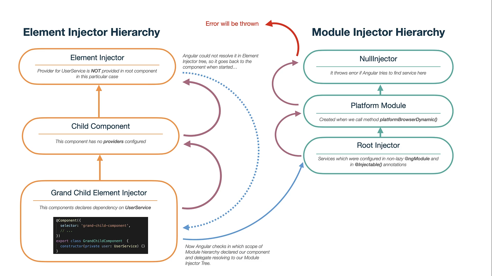

我們這次來介紹"我"不常用的 inject decorator
@Optional, @Self, @SkipSelf, @Host
Injector 程式面說明 - 微模擬
非實際 Angular 的運作模式, 單純模擬一下 injector 大概的理念
在 Component / Directive 中我們都會這樣子將 service 注入進來
1 | export class AppComponent { |
這裡很簡單的假裝有一個 LogService
1 | class LogService { |
在 Angular 做 compile 的時候大概會將這些 service 放入到某個位置供 Injector 做使用
1 | const injector = new Injector([LogService, ..., ..., ..., ...]); |
我們來看一下 Injector 大概的長相
1 | class Injector { |
各 Component / Directive 要使用的時候透過 get 的方式將這些 service 拿出來
1 | class Component { |
程式碼: 點我
快速的了解 Injector 以後讓我們來看 Angular 關於 injector 的機制有哪些
多級注入器(Hierarchical injectors)
大致上分兩種類型注入:
- Element injector
- Module injector
Element injector
不是針對 module 去做 providers 設置, 而是在 Component / Directive 中的 meta 做 providers 設置, 這一類都屬於 Element injector
1 | ({ |
Module injector
我們常用的 providedIn: 'root' 就是屬於 module injector, 另外也可以針對 module 類型的檔案就行 providers 的設置, 這也是 module injector
1 | providers: [{ provide: LocationStrategy, useClass: HashLocationStrategy }]; |
以上兩種 injector 是有先後順序的, 先由 Component / Directive 透過 Element injector 一層層往上找, 都找不到以後就會切換到 Module injector 一層層往上找, 直到噴出錯誤
下圖可以很清楚的看這個 flow

以上的"微"模擬 Injector 是什麼, 以及 injectors 機制後就可以來介紹本篇的重點 Resolution Modifiers
@Optional
AppService 不設定 providedIn
1 | () |
在 Component / Directive 若要使用 AppService, 必須要在 meta 上定義 providers
1 | ({ |
若 Component / Directive 忘了定義 providers 就使用的話會出現錯誤, 這時候可以用 @Optional 將這個 provider 設位選用, 也就是在 compile 的時候不會屬於必須
1 | ({ |
@Self
依照 Hierarchical injectors 機制, 會在 Component / Directive 本身的 providers 開始往上尋找直到 root.
若只要查找 Component / Directive 本身的 providers, 就可以使用 @Self, 找不到就直接報錯
1 | ({ |
這些 Resolution modifiers 可以組合使用
@Optional() @Self()
@SkipSelf
依照 Hierarchical injectors 中的機制, 會在 Component / Directive 本身的 providers 開始往上尋找直到 root.
若要從上一層開始到 root, 也就是跳過自身這層, 就可以使用 @SkipSelf
1 | ({ |
@Host
這個是最為特別的一個 modifiers, 他不會遵循完整的 Hierarchical injectors 機制, 他只會查找 element 結構的範圍
下面可以看到 CardComponent 中的 template 結構, 包含 app-card-body 以及從上層來的 ng-content
app-card內含app-card-bodyapp-card包含上層來的app-card-test
1 | <div> |
app 使用 app-card 並且傳入 app-card-test 進去
1 | <app-card> |
app-card 設置了 CardService
1 | ({ |
app-card 內含的 app-body 如果使用了 @Host 是找不到 CardService 的, 因為 @Host 會看到自己本身, 和 @Self 行為一樣要定義自身的 providers 才行
1 | ({ |
app 是將 app-card-test 傳到 app-card 裡面, 所以透過 ng-content 會使 app-card-test 隸屬於 app-card, 而不是被定義為 app-card 下面包含的內容, 隸屬的意思可以看做就是這個 app-card 本身的實例, 所以 @Host 等同於 app-card, 這時候就可以使用 app-card 提供的 CardService 了
1 | ({ |
總結
Angular 提供這四個 modifiers, 可以在不同情境中精準的設定出欲使用 provider, 但是一般的情況比較少會用到, 有個概念就好, 這樣在觀看網上的技術文章比較可以融會貫通, 而不是又多了一些看不懂的內容.